メソッド最適化のための標識なし差分法
ターゲットプロテオミクスは様々なグループ間あるいは生命体の状態間でのタンパク質／ペプチドの発現の差異を測定できることから、研究アプローチの1つとして広く普及し始めています。元々、Skylineはターゲットプロテオミクスを効率的に応用して疾病バイオマーカー候補タンパク質を検出し、その臨床的検証を得ることを証明するための試みとして、NCIの癌に関する臨床プロテオミクス技術評価（Clinical Proteomics Technology Assessment for Cancer, CPTAC）プログラムから出資を受けていました。
本チュートリアルではSkylineを使用して、塩分感受性ラットモデルを用いた心不全の実験的ケースコントロール研究で得られたSRMデータを解析します。本研究では、文献から得られた心不全に関連するタンパク質候補のリストを活用して、罹患群と健常群との間の血漿内タンパク質発現の差を同定しています。
本実験では、42回のLC-MS/MS注入を行い、49種類のタンパク質に由来する137種類のペプチドを観察しました。本チュートリアルで説明されているデータ処理および可視化技術に一度慣れてしまえば、より多くの実験群でより多くのターゲットを扱う大規模な研究のデータ管理・評価を比較的簡単にできるようになります。しかし本チュートリアルがなければ、比較的小規模なデータセットを扱う作業でさえ、その煩雑さに圧倒されてしまうことは想像に難くありません。ここで得られる知識は、より大きなデータセットや、Skylineがサポートする他の測定手法（PRM、DIA、DDA）に適用することができます。
チュートリアルを始める前に、以下のzipファイルをダウンロードしてください。
https://skyline.ms/tutorials/GroupedStudies1.zip
この中のファイルを、以下のコンピュータ上のフォルダに解凍します。
C:\Users\brendanx\Documents
これにより以下の新しいフォルダが作成されます。
C:\Users\brendanx\Documents\GroupedStudies1
この新規フォルダのコンテンツを調べていくと、サブフォルダが含まれていることが分かります。
以下のチュートリアルに従い、この種の研究データの処理方法を学習し、研究のタンパク質／ペプチドターゲットおよび全体的なデータ品質について理解を深めてください。
作成した直後の「GroupedStudies1」フォルダの「Heart Failure」サブフォルダ内のデータは、ターゲットメソッドの最適化チュートリアルで説明されているアプローチの可能性や限界を調べる際にMacCossラボで収集されたものです。このデータは、さまざまな理由により論文に掲載されませんでした。一部の理由については、Skylineを利用して収集データを理解していくと明らかになってくるでしょう。しかし、このターゲットメソッドの最適化およびその他の類似実験の試みから生まれたアイディアの多くは、このデータセットとは別に、論文として出版されています。1
最初の研究では、文献上で既に示されている、心不全に関与する109のタンパク質が選択されました。これらのタンパク質はSkylineドキュメントに追加されています。その一部は、タンパク質シークエンスのFASTA形式のテキストをインポートし、Skylineがトリプシン消化をin silicoで実行できるようになっています。長さ6～30アミノ酸で開裂欠損のないペプチドをすべて含むパラメータが、Skyline内に設定され、その他のタンパク質については、Skylineを使用しないin silico処理を実行しました。これらのタンパク質から得られたペプチドリストが、Skylineドキュメントに直接加えられました（ターゲットメソッドの編集チュートリアルをご覧ください）。これにより、2,165のターゲットペプチドを持つドキュメントが作成されました。2価の各プリカーサーについては、y3～y(n-1)に対応する1価プロダクトイオンが検討されました。最初の包括的メソッドでは12,194のトランジションをカバーし、プールしたラット血漿試料を未スケジュール化SRMメソッドで測定しました。この最初の分析は一度だけ実行され、2009年には151回の個別の質量分析注入を要しました。今日では質量分析計での1回の実行で2,165のペプチドすべてを試験できるため、このフェーズではDIAを使用する意向が強いと言えます。
得られた151個の生データファイルをSkylineへとインポートし、試料処理をこれ以上行わずに血漿マトリックス内でどのターゲットペプチドが検出に適しているかを判定しました。元の2,165のターゲットペプチドのうち、ターゲットy-イオン（3イオンで2、4イオンで5、5イオンで27、および6イオンで103）で十分に共溶出し、フル勾配クロマトグラムにおいてピークを有していたのは、135（49のタンパク質由来）のみでした。残りの780のトランジションについては、90分勾配で検出されたピーク前後の5分間の保持時間ウィンドウを利用して、1回の分析で定量化するようスケジュールを設定しました。このスケジュール化メソッドを使って、14体の塩分感受性ラット（7体が健常、および7体が塩分過多の食事による心不全を罹患）の血漿試料を分析し、各試料について3回繰り返し測定して計42回の試料注入を実行しました。本チュートリアル全体を通して解析することになるこれらのデータは、135種類の検出可能なペプチドのうち2グループ間の差の見込みを示すものを判定し、それらを今後の研究の潜在的バイオマーカーの候補としたものです。
本研究の全体的な目標は、ターゲットタンパク質／ペプチドの予備知識をあまり多く持っていなくても、しかも安定同位体標識した参照ペプチドを使用せずに、ターゲット解析から役立つ科学的洞察が得られるかどうかを判定することです。
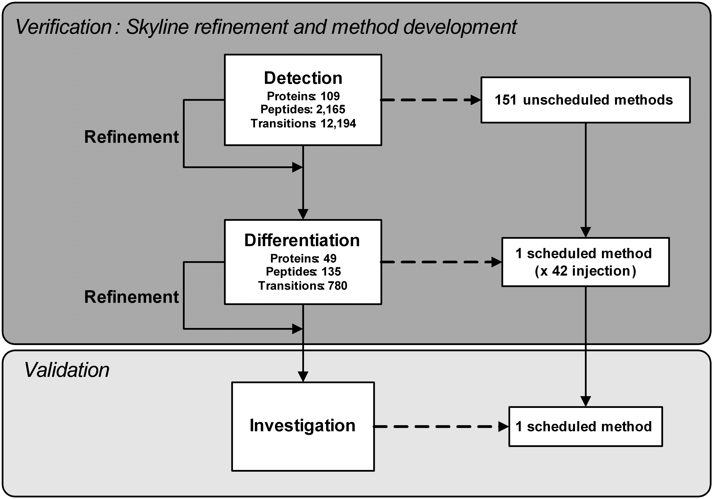
図1：塩分感受性ラットモデルの心不全研究において、ターゲットメソッド最適化の「検出」および「差分」フェーズを示す概略図。
このメソッドの最適化研究の差分フェーズ向けに収集されたデータの処理を開始するには、以下の操作を行います。
Skylineウィンドウの右下角の数値をチェックすると、開いたファイルには49のタンパク質、137のペプチド、および789のトランジションが含まれていることが分かります。
これは上記の図（発表されていない論文からの図）で示されたものとは大きく異なり、またドキュメントには追加のペプチドリストが1つ含まれています（下の方に「S」と名付けられているもの）。同リストにはグローバル正規化ペプチドが3つ含まれています。これらは、試料内のすべてのペプチドに影響を与えてしまう、分析における体系的変動の影響を低減させることを目的としています。これについては、後で詳しく触れます。また、ペプチドを1つ持つタンパク質が1つ、上記で説明したファイルからなくなってしまっています。
一部のペプチドにはライブラリスペクトルと一致するものがあることに気づかれるでしょう。これは、[ ターゲット ] ビューで見ることができます。右下角のスペクトルラインのあるペプチドアイコン（ ）には一致スペクトルがあり、ラインなしのペプチドアイコン（ ） には一致スペクトルはありません。当該スペクトルは2つの異なる公共スペクトルライブラリからのもので、1つはNIST、もう1つはグローバルプロテオームマシン（Global
Proteome Machine、GPM）からのものです。以下を行ってこれらの範囲を探索できます。
）には一致スペクトルがあり、ラインなしのペプチドアイコン（ ） には一致スペクトルはありません。当該スペクトルは2つの異なる公共スペクトルライブラリからのもので、1つはNIST、もう1つはグローバルプロテオームマシン（Global
Proteome Machine、GPM）からのものです。以下を行ってこれらの範囲を探索できます。
ここでグリッドをスクロールダウンすると、ライブラリスペクトルを用いたペプチドの数（80個）を確認できます。これらは、ラット（NIST）ライブラリ（49個）とラット（GPM）ライブラリ（31個）の各スペクトルデータに由来します。選択したセルの行番号がグリッドの上にあるツールバー内に表示されていることに注意してください。

現在の例については、この情報により、この実験の基となった予備知識がわずかに得られます。タンパク質に関する知識は今日、高度化しており、Prositなどのようなスペクトル予測ツールによってターゲットペプチドをすべて完全に網羅することができます。
14個の被験体の技術的繰り返し測定を3回行って取得したSRMデータの処理を始めるには、以下の操作を行います。
ファイルの読み込みが始まり、Skylineはウィンドウに、進行状況を以下のように表示します。

SkylineがSRMクロマトグラムをインポートしている間にデータ処理の準備を続行するには、以下の操作を行います。


フォームは以下のようになります。

Skylineウィンドウは以下のようになります。

注：この画像は、解像度1920x1080の24インチのモニタ上でキャプチャしたものです。本チュートリアルをデジタル方式でご覧になっている場合、200%以上ズームインしてこの画像を見ることをお薦めします。これ以降、本チュートリアルでは元通り、8½ x 11インチのページレイアウトにより適した画像を使用していきます。多くのSkylineワークショップは1024x768 のスクリーン解像度で行われていますが、より大きいモニタを使用すればSkyline の利用はさらに快適になるでしょう。
この最初のペプチド、K.GILAADESVGSMAK.R [28, 41]の [ 保持時間 ] ビューに注目してみると、 積分領域があまり一貫していないことが分かります。選択されたピークのほとんどは約19分で溶出します。しかし、3分の1ほど（12）は22分付近で溶出します。

これでも、このペプチドの積分はあまり良くありません。19分前後のピークはより良いピークに見えますが、単一ペプチドの結果なのであまり信頼できません。更に、積分を調整しても、すべての分析で一貫して測定可能な単一ペプチドとなる可能性は低くなっています。したがって、更に調整を行って時間を無駄にすることはせず、次の操作を行ってく ださい。
2番目のペプチドの保持時間プロットを見るだけで、同ペプチドがより一貫して積分されてい ることが分かります。
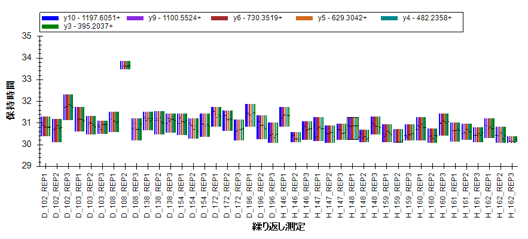
しかし、すべてのトランジションのピーク頂点（バー内の水平ラインで表示）は一定していません。いくつかのクロマトグラムグラフに注目してみると、形状がギザギザで強度が中～低のピークも見られます。
すべての罹患群繰り返し測定（D_）が左側、およびすべての健常群繰り返し測定（H_）が右側という状態で、上記で示された並び順が見られない場合は、以下の操作を行います。
続行する前に、表示中のプロットに最後の調整を行います。
これにより [ ピーク領域 ] プロットが以下から
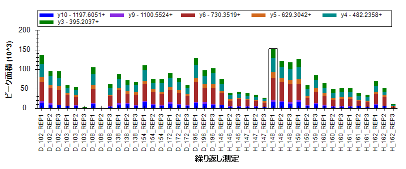
次のプロットへと変わります。
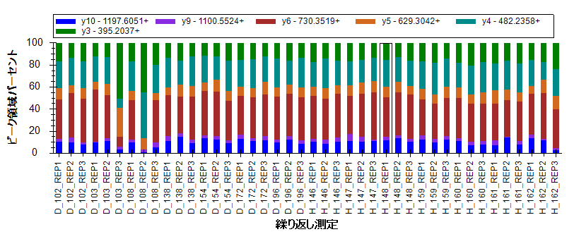
これにより、複数の分析にわたる相対イオン存在量の差を一瞥して見分けることが可能となり、 [ 保持時間 ] ビューからすでに取得している情報に追加されます。他のすべての繰り返し測定と比べて、D_103_REP3とD_108_REP2は顕著に異なっていること、そしてH_162_REP3はいくらか異なっていることに気付かれたかと思います。[ 保持時間 ] ビューだけを使用したときには、D_108_REP2のみが疑わしく見えたことに注意してください。
以下を行って、これらのピークを検査・修正します。
これにより当該ピークのクロマトグラムグラフが有効化され、以下のようになります。
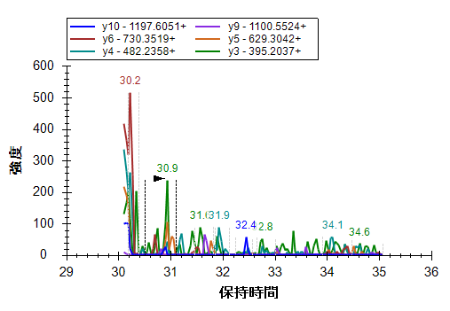
一方、正しく積分されたピークのプロットはこのようになります。
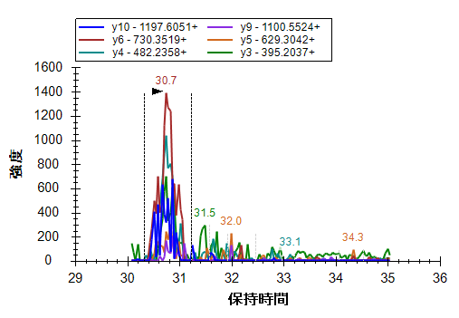
スケジュール化取得ウィンドウが当該ペプチドの全溶出プロファイルをキャプチャしなかったため、Skylineにより誤ったピークが選択されていますが、正しいピークが30.2分付近で終わっているのが見えます。これは「切断ピーク」と呼ばれます。このペプチドの積分は、切断ピークを使用し以下の操作を行うことで修正できます。
D_162_REP3のピークも切断されていますが、同ピークは別のケースに含まれていたため、Skylineによりすでに正しく選択されています。[ 保持時間 ] プロットを綿密に調べると、ピーク切断を推定できる場合があります。バーの長さおよびバー端への水平ラインの近接度に特に注意を払ってみてください。
ピーク切断は、このような標識なしデータにとって無視できない問題です。ピークの各ポイントでライトペプチドプリカーサーとヘビーペプチドプリカーサーの間の有効な相対比が得られる同位体標識参照ペプチドを利用すると、切断ピークによる精度は失われますが、ライトとヘビーの間の比は変わらず有効です。標識なしデータを用いる場合は逆に、切断ピークは有効なペプチド測定値としては信頼できません。欠損データとの差分統計を計算するか、当該ペプチドを考慮から完全に除く必要があります。Skylineは、以上のことがこれ以降の操作で使うツールで有効になるよう、切断ピークを追跡します。
Skylineは切断ピークを、その境界の1つがクロマトグラムの末端ポイントであり、同末端における強度がその他の積分境界での強度よりもピーク高さの1%以上高いピークとして定義します。
Skylineが切断ピークとして同定したその他の自動積分ピークを見るには、以下の手順を実行します。
[ 検索 ] フォームは以下のようになります。
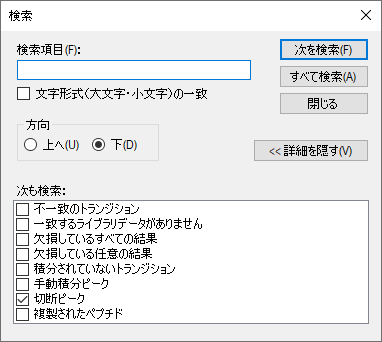
Skylineに切断プリカーサーおよびトランジションの長いリストが表示され、先に検査したばかりの3つのピークが冒頭に記載されています。ラインをダブルクリックすると、対応するクロマトグラムグラフが有効化されます。
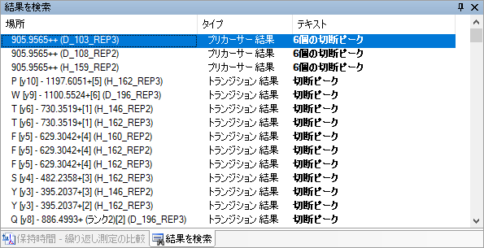
またドキュメントグリッドを使用して以下の操作を行うと、ピークが切断されているすべてのプリカーサーのリストを作成できます。
[ レポートをカスタマイズ ] フォームは次のようになります。
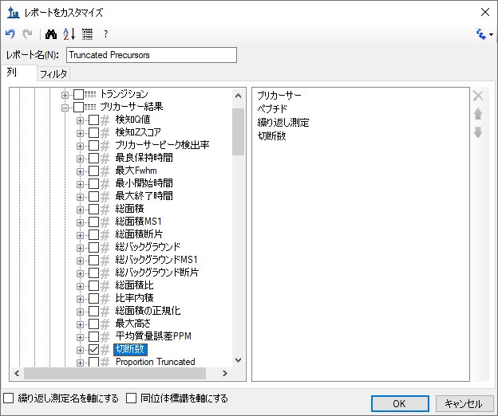
[ レポートをカスタマイズ ] フォームは次のようになります。
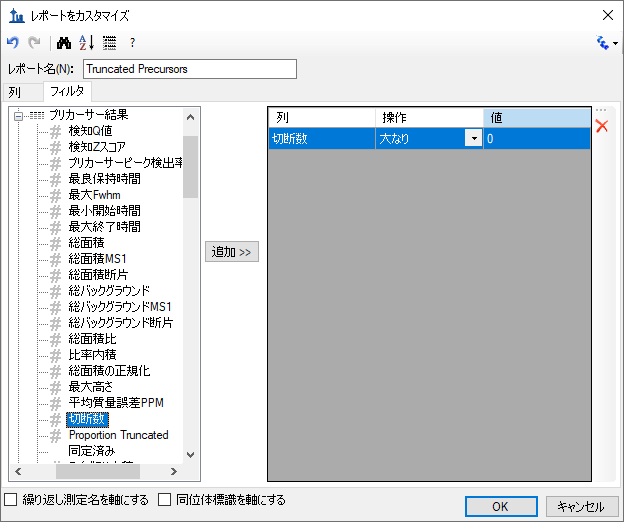
[ ドキュメントグリッド ] に、Skylineがすでに自動的に選択した221の切断ピークが表示されます。

これらのピークを表示するには、以下の操作を行います。
Skylineにより以下のクロマトグラムグラフが有効化されます。
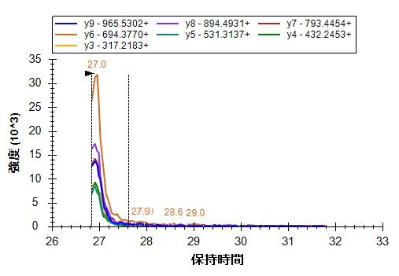
ペプチドLGGEEVSVACKは、これまで見てきた他の2つのペプチドよりもかなり良い結果となっています。保持時間は非常に安定しており、水平ピーク頂点ラインは各繰り返し測定内のほとんどすべてのトランジションに対して一致しています。
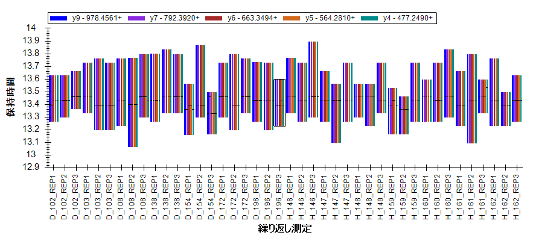
[ ピーク領域 ] ビューに表示されている相対イオン存在量も比較的安定して見えます。このペプ チドに対応するライブラリスペクトルがあること、そしてその相対イオン存在量（プロット内の一番左側のバーに表示）が測定ピークのものと類似していることに気付かれるかもしれません。ペプチドが対応するライブラリスペクトルにどれだけ厳密に一致しているかを詳しく見るには、以下の操作を行います。
Skylineに、1（最良）～0（最悪）の範囲のライブラリスペクトルピーク強度と測定ピーク領域との間の類似性測定値であるドット積（dotp）関係が表示されます。

以下の操作を行って [ ピーク領域 ] ビューを元の状態に戻します。
ここでこれらのピークのクロマトグラムを詳しく見るには、以下の操作を行います。
一部のトランジションでは、メインピークの端付近に他のピークとあまり一致しないシグナルが表れていることに気付かれるかもしれません。
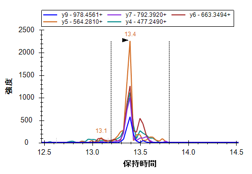
13.1分付近のy5およびy6に明確なシグナルが見られるため、これは明らかに同一ペプチドからのものではありません。
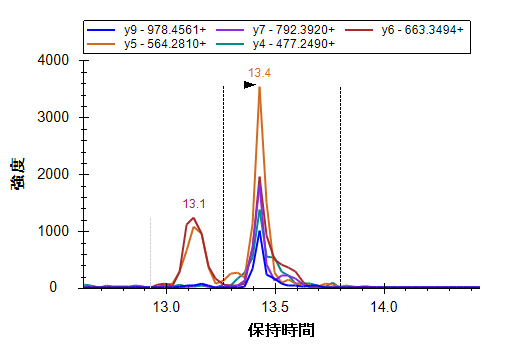
このような干渉シグナルが積分境界内で起こる場合、定量的測定にエラーが増えます。重要な定量的データについては、このペプチドの5つのトランジションすべてが必要かどうか検討してみてください。
本チュートリアルでは次のペプチドへと続行します。7個のトランジションすべてにおいて、強いシグナルで形状が整っており、かつ共溶出のピークが見られます。
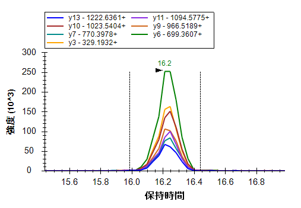
相対イオン存在量も非常に一定しています。
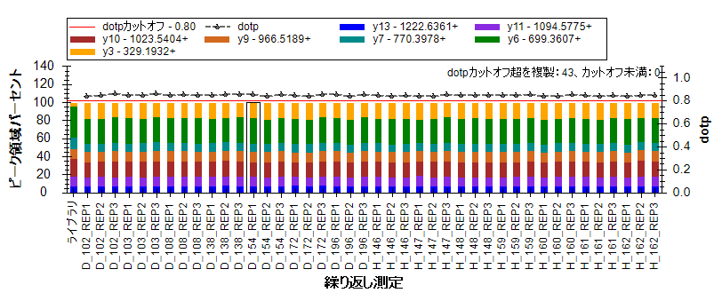
y3のピーク領域は、ライブラリスペクトルで見たものより強力です。これは、三連四重極装置内で起こる二次断片化により、説明可能かもしれません。ライブラリスペクトルを生成した際に用いたイオントラップでは、装置内での共鳴励起では二次断片化は起こらない場合があります。このケースでは、スペクトルはNIST公共ライブラリからのものですので、ライブラリ作成に使用した装置のタイプについての情報はありません。
この積分は更に検査を行わずとも十分に良好であり、次のペプチド、R.GSYNLQDLLAQAK.L [378, 390]へと続行可能であることが一目で分かります。この次のペプチドについては、[ 保持時間 ] ビューと [ ピーク領域 ] ビューの両方に問題が示されています。これらの測定に何が起こっているかを理解するには、以下の操作を行います。
最初の5つの繰り返し測定については、選択されたピークが約32.5分～33.5分にあり、5つのトランジションすべてにシグナルがあります。しかし、35分付近で主にy4およびy5のシグナルを示すもう1つのピークがあり、これらは明らかに別のペプチドにより引き起こされたものです。このようなケースでは、目的ペプチドと共溶出しない干渉シグナルの情報が表示中のクロマトグラム「環境」に追加される場合があります。
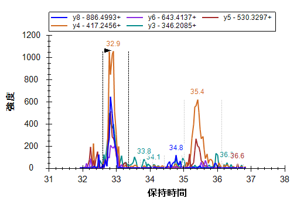
D_103_REP3では、主にy4およびy5上にシグナルを持つ積分ピークが33.9分に見られますが、左側にはその他の候補ピークは見られません。
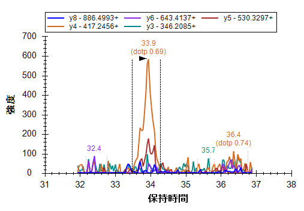
このケースでは、スケジュールウィンドウによるターゲットペプチドのシグナルキャプチャが失敗に終わっています。不正確なピークを削除するには、以下の操作を行います。
[ ピーク領域 ] グラフが空白になります。
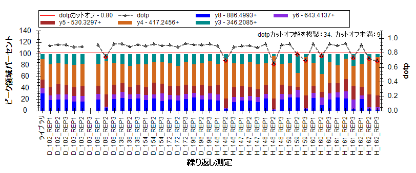
クロマトグラムプロットを続行すると、このパターンが何回か繰り返されることがわかります。欠損ピークを削除し続けてください。ピーク切断のケースも一部見られます。H_148_REP2に目を向けると、Skylineは33.9分のピークを選択しているものの正しいピークの一部を視認できます。
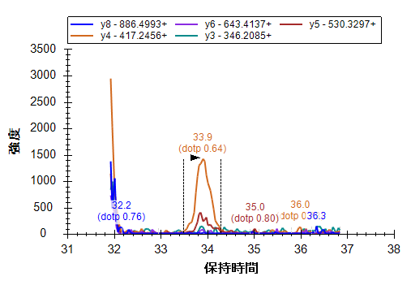
これは単に、上記で行ったようにx軸の下をクリック＆ドラッグすることで、切断ピークとして積分可能です。ピーク領域プロットは以下のようになるはずです。
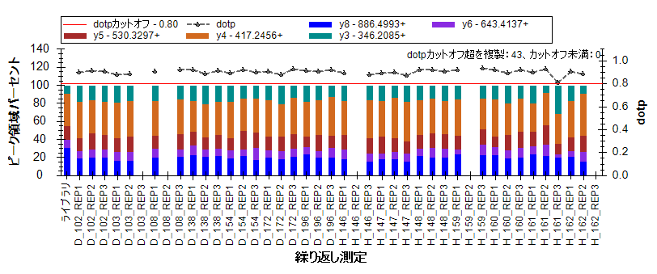
また保持時間プロットは以下のようになるはずです。
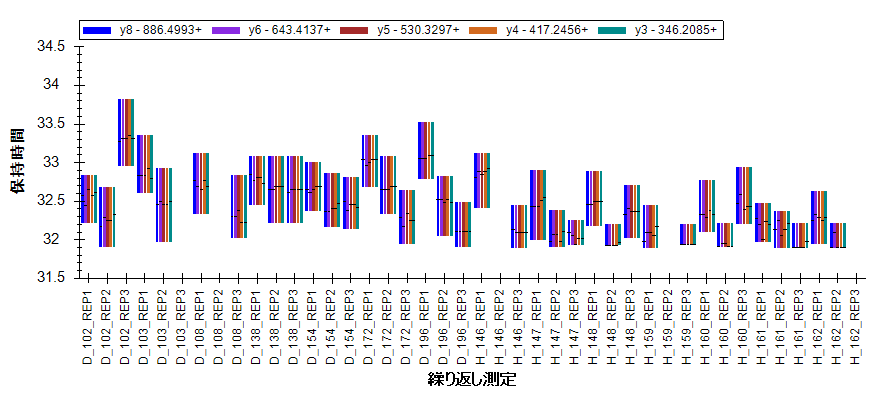
5分のスケジュールウィンドウのどこにも積分ピークと真に一致しているシグナルはないことに気付くはずです。
タンパク質NP_001012027内の次の3つのペプチドはすべて、比較的安定した保持時間と相対イオン存在量を見るとすべて良好に見えます。
保持時間内で見られる変動は、予想より一貫性がないと思われるかもしれません。これは、分析が論理的に並んでいるときによく見られるケースです。現在の並べ順は、繰り返し測定をドキュメントへとインポートした際の結果です。この種の研究では、すべての罹患被験体を最初にリストし、その後にすべての健常被験体をリストすると便利です。各被験体のすべての技術的繰り返し測定もまた、グループ化されます。
ペプチドTSDQIHFFFAKについては、保持時間はこのようになります。
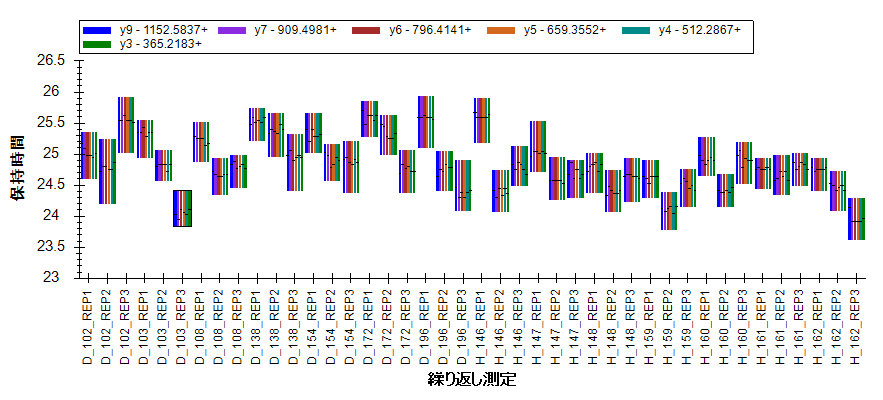
しかし、装置上で取得された順に分析を見ることができれば便利な場合もあります。これは、以下の操作によって実行可能です。
グラフが以下のように変更されます。
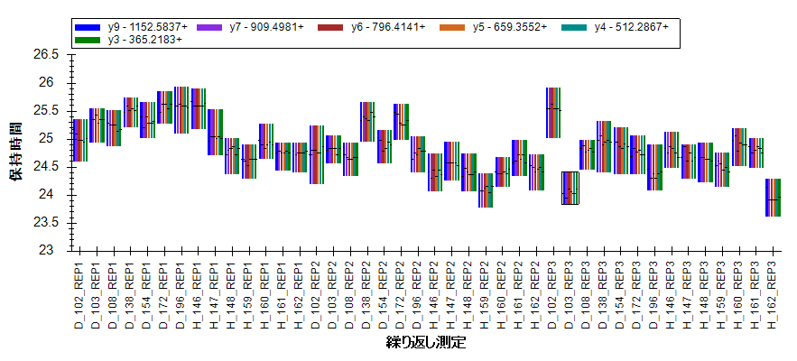
この保持時間パターンは、一貫性がやや向上しています。ここで、次の2つのペプチド（LQPLDFK、SQLPGIIAEGR）から選択すると、一貫したパターンを確認できます。
次のペプチド、DFATVYVDAVKには一部ピーク切断があります。これは、あまり良く一致していない [ ピーク領域 ] ビュー上のバーをクリックし、対応するクロマトグラムグラフのx軸の下をクリック＆ドラッグすることで迅速に修正可能です。また、ノイズ過多に見えるクロマトグラフィーには、ピークがいくつかあります。この例は、以下のクロマトグラムの右側にあります。これは、最も右端のペプチドピークのみが測定され、強度がより高い部分が欠けているためです。
| 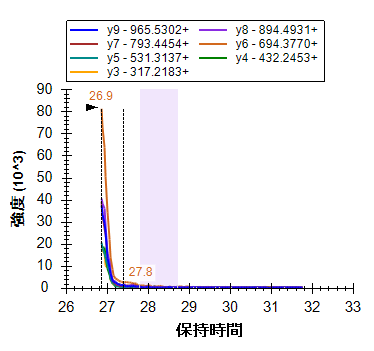 | 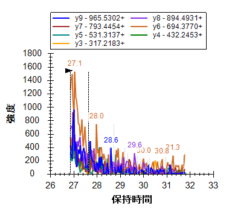 |
このようなケースでは、Skylineが切断ピークとして同定できなかった一部ノイズを絶対に積分しないことです。これらの繰り返し測定のピークを削除する方が簡単かもしれません。
このセクションで最後に扱うのは、ペプチドFGLYSDQMRです。[ 保持時間 ] ビューで、 Skylineが主に19分に近いピークを選択しているのがわかります。しかし [ ピーク領域 ] ビューは、相対イオン存在量の一貫性が非常に乏しいことを示しています。
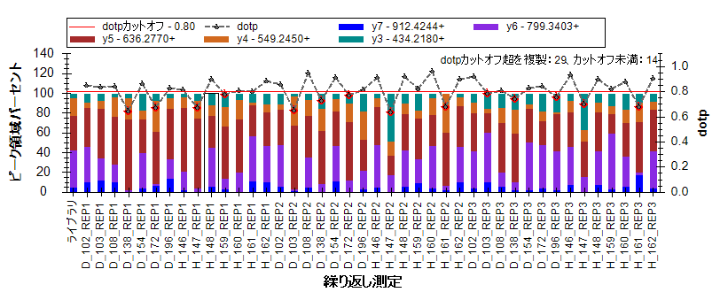
いくつかのクロマトグラムグラフを分析すると、18.8分の信号は、積分シグナルすべてが単一ペプチドに由来していると信頼した上で、一定して積分されているとは考えにくいということが分かります。このケースでは、当該ペプチドを消去して先に進みます。
このデータセットには安定同位体標識labeled（SIL）ペプチドが欠如していますが、試料にスパイクした合成グローバル標準ペプチドが含まれています。これらのペプチドを使用する目的は、LC-MS/MS分析時のシステム変動の影響が低減されるよう、他のすべてのペプチドのピーク領域を正規化することです。2 これらのペプチドを分析するには、以下の操作を行います。
ドキュメント内の最後のペプチドであるAFGLSSPRが選択されます。「S」という名のリスト内にグループ化されている3つのペプチド、HLNGFSVPR 、VVLSGSDATLAYSAFKとAFGLSSPRは、本実験で注入された合成ペプチドです。これまで検査してきた2つの概要プロットからの最後の2つのペプチドの自動積分は精度が高いと確信できます。保持時間およびピーク領域は比較的一貫しています。

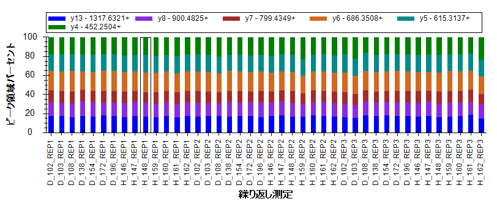
ペプチドHLNGFSVPRへ移ると、一貫した保持時間を観察できます。しかし、ピーク面積にはより多くの変動が見られます。y4、そしてy3の相対面積は、時折データセットを通してむらがあるように見えます。
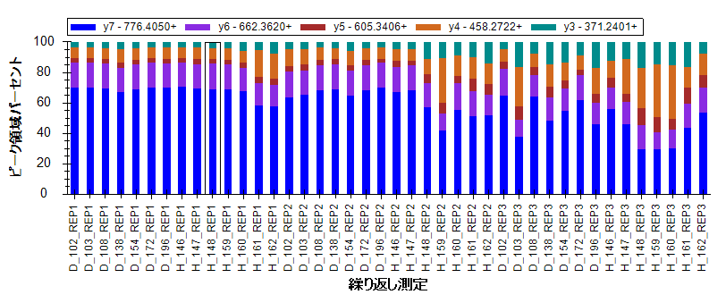
y4が最も豊富なピーク領域バーを複数クリックすると、y4、そして時にはy3への明らかな干渉が見られます。
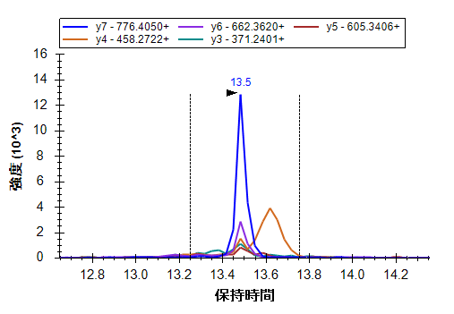
これら注入ペプチドが正規化標準として使用できるかについて明確な情報を得るには、 以下の操作を行います。
ここでペプチドHLNGFSVPRのピーク領域が、最初の試料で取得された結果から最後の試料の結果に移行するにつれて劇的に減少するのが分かります。総ピーク領域はおよそ6,000,000から30,000で、200倍の差があります。選択したHLNGFSVPRペプチドプリカーサー 513.7776++で、[ 結果グリッド ]（[ ビュー ] > [ その他のグリッド ] > [ 結果グリッド ]）を使用して正確な最大および最小総ピーク領域を判定できるか試してみてください。その他の2つの標準ペプチドを見てみると、こちらも経時的に減少している（VVLSGSDATLAYSAFKは230万が110万、AFGLSSPRは2300万が100万）ことがわかります。42回のランすべての分析は、基本的にこれら3つのペプチドに対する技術的繰り返し測定であるはずです。このデータセットでは経時的にすべてのペプチドに明らかなシステム的なシグナル劣化がありますが、200分の1または20分の1に減少するものは通常、少数です。
これらのペプチドが相互に比較してどこで溶出してくるかを見るには、以下の操作を行います。
クロマトグラムグラフが変更され、「S」リスト内の3つのペプチドすべてがまとめて表示されます。
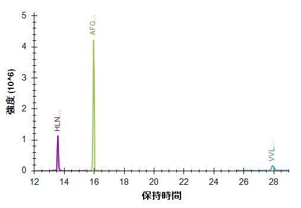
ここでドキュメント内のすべてのペプチドをまとめて見るには、以下の操作を行います。
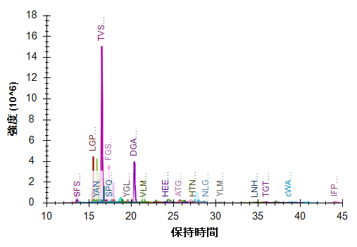
これにより、問題があった2つのペプチドはどちらも親水性で早く溶出することが明確となります。実際のところ、これらは本実験の3番目および10番目の溶出ペプチドです。こ れをSkylineで見るには、以下の操作を行います。
早く溶出するペプチドは変動が大きい傾向があります。したがって多くの場合、これらはグローバル正規化標準の最良の候補ではありません。これらのペプチドは、オートサンプラー内での注入待ちの間の劣化といった、その他の要因から影響を受ける可能性もあります。
別の方法でこれらのペプチドが周辺の他のペプチドにどれだけ同じように振舞うかを評価するには、以下の操作を行います。
表示内容を理解しようとする前に、すべての非標準ペプチドには、14個の被験体で測定されたためにより大きな誤差が出ると予想されると考えてください。また積分は、すべてのペプチドについて完全に調整されているわけではありません。現在のデータセットについては、当該標準に関して自動的に選択されたピークは正しいように見えます。しかし、HLNGFSVPRペプチドは約160%で2番目に高いCV値を持ち、またAFGLSSPRペプチドのCV値は約50%で、最初の15個のペプチドの中央値に近くなっています。（より疎水性で遅く溶出するVVLSGSDATLAYSAFKペプチドは108番目、またはCV値18.6%で80パーセンタイルに入ります。）
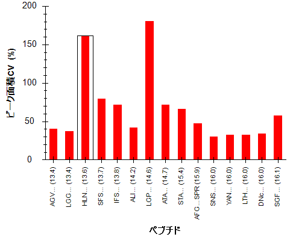
以下を行うと、LGPペプチドにはHLNペプチドと非常に似た問題があると確信できるはずです。
3サイクルまたは技術的繰り返し測定があるはずですので留意してください。
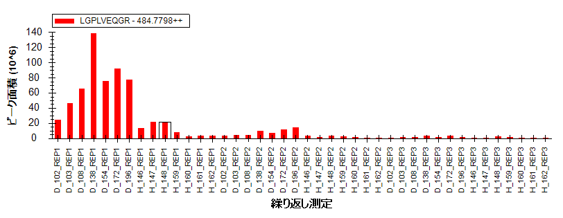
ピークが正しく積分されていることを確認するには、以下の操作を行います。
最小から最大まで200倍の範囲（1億4000万～70万）であるにも関わらず、分析間の相対プロダクトイオン存在量は非常に安定しています。
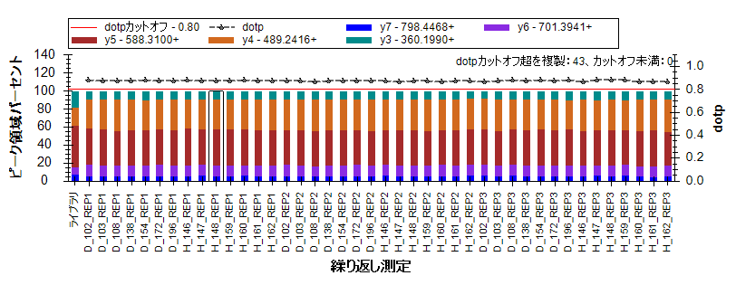
このペプチドには同様の問題があるように見えますが、HLNGFSVPRのようなペプチドはグロ ーバル正規化標準としての考察から除外すべきです。できれば、標準ペプチドを重要な定量的データに注入するかなり前にこの操作を実行します。この場合、VVLSGSDATLAYSAFKのみをドキュメント内の他のすべてのペプチドに対するグローバル正規化標準として利用すべきです。この概念をさらに証明することは、本チュートリアルの範囲外であるため割愛します。
今度は、「S」と表示されている標準ペプチドリスト上のペプチドDVFSQQADLSRを選択して、本実験のピーク積分を引き続き再確認・修正していきます。
グラフ中で見られる保持時間やピーク領域の一貫性から、すべてのランにおいてペプチドが一定して積分されているという信頼性が得られるはずです。このペプチドをさらに再確認せずに [ ターゲット ] リストを続行して構いません。これは次の2つのペプチドにも当てはまります。
ペプチドIFSQQADLSRに達するまでリストを続行します。H_146_REP1を除くすべての繰り返し測定で [ ピーク領域 ] グラフ中に一貫した相対イオン存在量があることに気付くでしょう。ここでも、このランのバーをクリックすると、H_146_REP1のピークが5分間のスケジュールウィンドウに完全に収まっていないことが分かります。（場合によっては、これを見るには x軸ズーム（Shift+F11）をオフにする必要があります。）
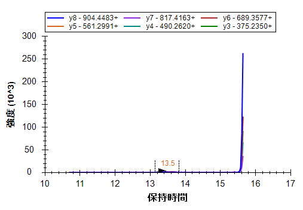
この問題については、以前行ったように、x軸の下をクリック＆ドラッグして切断ピークを積分するか、または右クリックメニューを利用してピークを完全に削除することで修正できます。
しかし、これはこのペプチドに限った問題ではありません。[ 保持時間 ] グラフに注目すると、積分される時間の範囲に、通常とは異なった差異が複数見られます。
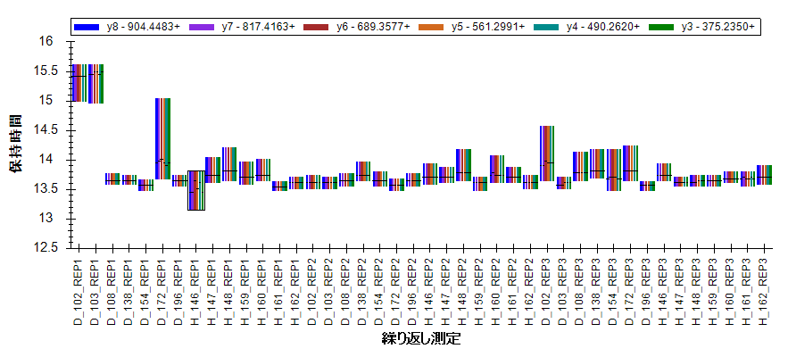
このペプチドに関するいくつかのクロマトグラムを再確認すると、多くのものが0.2分間に溶出する単一の非常に優良なピークを示しているのが分かります。しかしその他については、溶出が約0.5分間にわたってテーリングしているピークや、2分間にわたる溶出で2つの明白なピークを持つペプチドが存在します。
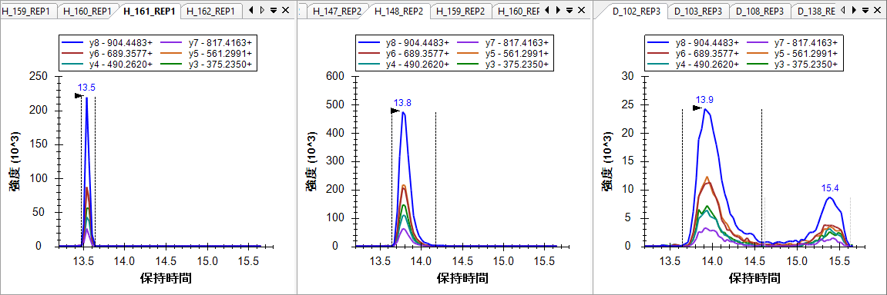
このようなペプチドは、特に一致SILペプチドがなければ、定量化に使用することは非常に困難です。本実験からこのペプチドを消去した方がよいかもしれません。せめて、二重溶出プロファイルを示すピークは削除した方が良いでしょう。
続いてペプチドリストを見てみると、次の7つのペプチドには十分に良好な一貫性があることがサマリープロットで確認できることから、Skylineによるピーク選択を修正する必要はなく、これらのペプチドを一瞥するだけで十分ということが分かります。
しかしペプチドMLSGFIPLKPTVKまで来ると、大きな変動があることが [ ピーク領域 ] グラフから分かります。
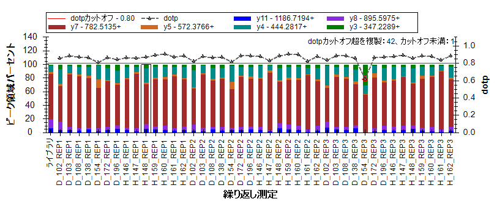
このペプチドの総ピーク領域では、y7イオンが優位となっています。これは、ライブラリスペクトルにも反映されていますが（上記グラフの左端に表示）、実際にy7イオンと共溶出するものがあるかどうかについてクロマトグラムを見ただけで識別することは困難です（以下を参照）。
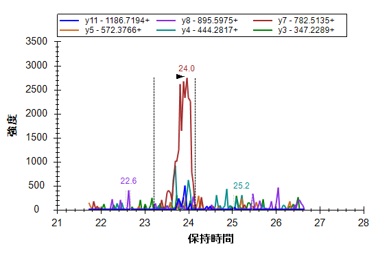
しかしSkylineはほとんどの場合、各ランにおいて同一分子に対する同一ピークを積分していることも明らかです。y7ピーク以外のものがあるかを確認するには、最高強度の測定値に注目してください。以下の手順でこれを行うことができます。
これらの3つのプロット内で見られるクロマトグラムピークから、ペプチド存在量が十分に高い場合、23～24分でy7ピークを持つペプチドでは6つのトランジションすべてで共溶出信号が得られていることが十分に理解できます。
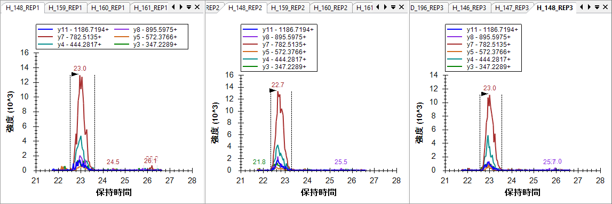
このペプチドを消去するよりは、Skylineによって誤ったピークが選択されているデータを修正する方が良策でしょう。これは、[ 保持時間 ] プロットにおいて、22.5分未満に現れる短いバンドとして確認できます。
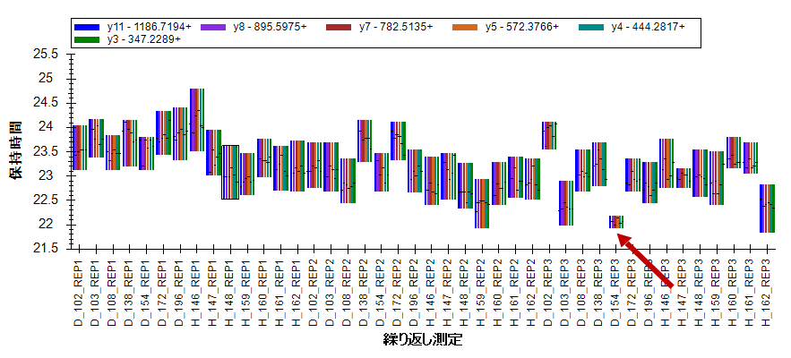
また [ ピーク領域 ] プロットでも、このランには視認できる積分信号がないことが分かります。
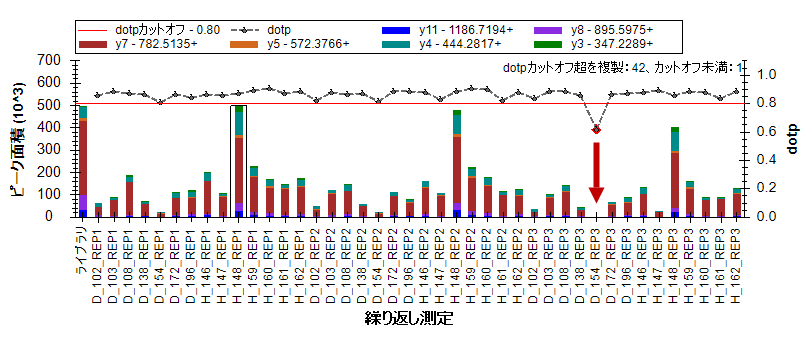
[ 保持時間 ] ビュー内のバーをクリックして、このランのクロマトグラムグラフを有効化します。このランがy7トランジションにおいて非常に低い信号を有しているのが分かります。周辺のランから得たデータを確認せずに、ペプチドを代表するトランジションとしてこのトランジションのみを選択することはまずないでしょう。

このランの積分を修正するには、以下の操作を行います。
ピーク積分の再確認を続ける前に、以下の操作を行って、相対イオン存在量を示す [ ピーク領 域 ] グラフに戻ります。
修正されたピークは、サマリープロット内のその他のランと似通っていることが分かります。
上記ペプチドへと続行します。ペプチドGMYESLPVVAVKではサマリープロットに一貫性がないので、このペプチドは消去するだけにしてピーク積分の調整は行わない方がよいでしょう。ペプチドETGLMAFTNLKでは、1つのランのみで調整が必要です。このランは [ ピーク領域 ] グラフ内で明確であるはずです。チュートリアルのこの時点までで、何が間違っていて、その問題をどのように修正するかについて、理解が深まったことと思います。
この修正を行った後でも、ETGLMAFTNLK ペプチドのすべてのケースにおいて同一ペプチドの同一ピークが積分されていると確信できない場合、以下のいずれかの操作を行って、すべてのクロマトグラムグラフを迅速に再確認できます。
または
多くのグラフで、選択したピークの約1.5分前のy3およびy4トランジションでペプチドが干渉しているのが分かります。これにより、積分ピークの一貫性における信頼度が高まります。
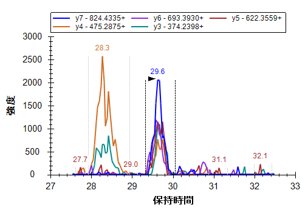
[ ターゲット ] リストを続行していくと、複数のペプチド（YANVIAYDHSRとTDEDVPSGPPR）で測定ピークの相対イオン存在量と一致ライブラリスペクトルとの間の差が明白となっていることがわかります。これらの差は [ ピーク領域 ] グラフ内で見ることができます。
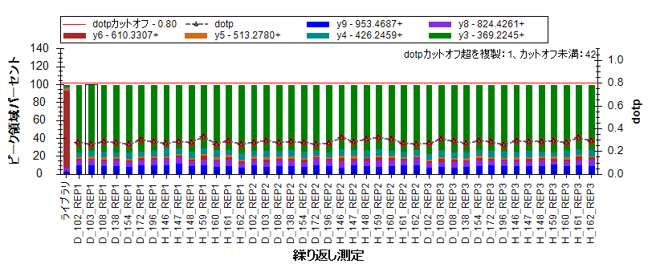
これはクロマトグラムグラフ内でも観察でき、Skylineではピーク保持時間の下に低いドット積値「（dotp 0.28）」が表示されます。
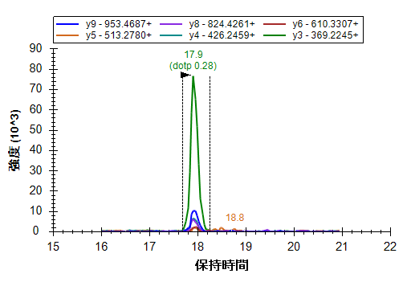
Skylineは、dotp値が高いグラフに別のピークがある場合に、このような「dotp」値を表示します。上記のケースでは、選択したピークに対してノイズレベル付近の低いピークしか見られないため、より良いdotp値を持つピークを見つけることはできません。上記を見るためには、以下の操作を行います。
より良いdotp値を持つ小さいピークが見えるまで、グラフのyスケールをズームします。
本実験で使用したものと同様の質量分析計で当該ライブラリスペクトルが収集されたという確信があれば、この積分ピークは目的のペプチドを正しく測定していないのではないかという疑念が起こります。しかしこの場合、このスペクトルのソースについてはあまりよく分かっておらず、このサンプルで当該ペプチドを測定する他の選択肢はないでしょう。
[ ピーク領域 ] グラフおよび [ 保持時間 ] グラフにおけるラン間の一貫性から、6つの共溶出トランジションを介してすべてのランで同一ペプチドが測定されていることが確信できるはずです。最も豊富なイオンが選択性の低いy3イオンであるにもかかわらず、このトランジションを削除して他のイオン（y9が2番目に最も豊富なイオン）の一貫性および共溶出をより詳しく分析することが可能です。このピークの品質に確信が持てた場合は、[ 元に戻す ] ボタン（Ctrl+Z）を使用して、削除したy3トランジションをSkylineドキュメントへと戻せます。
TDEDVPSGPPRの上の7つのペプチドの中では、ペプチドSPQGLGASTAEISARについて誤って積分されたピークが1つだけ見られます。この段階では、この問題を比較的簡単に見つけ、修正できるはずです。
ペプチドCSSLLWAGAAWLRへと移ります。サマリープロットで観察される変動から判断して（以下を参照）、最初はこのペプチドを削除して先に進みたいと思われるかもしれません。
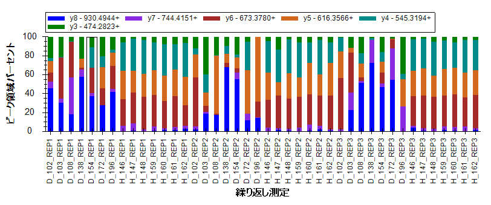
しかし注視してみると、健常被験体の中には一貫性のある領域があります。これを明確に示すため、以下の操作を行います。
そこでグラフは以下のように変更されます。
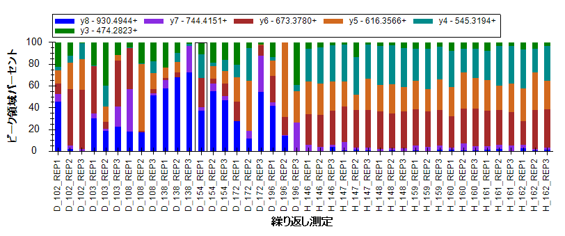
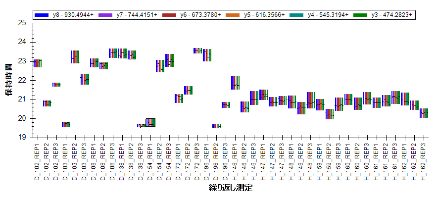
健常被験体では一定のピークが積分され、罹患被験体についてはそうではないことが明確になります。健常被験体のピークを再確認すると、強度はかなり低く、主にy4、y5、およびy6イオンの共溶出に依存しているのが分かります。この共溶出はおそらく、1つのペプチドに起因しています。しかし、このペプチドが実際にCSSLLWAGAAWLRであるかどうかを判定することは困難です。
罹患被験体のクロマトグラムを見てみると、y6トランジションの21分付近にピークと思われるものが時折見られます。しかし大抵の場合、一貫した溶出パターンを観察することは困難です。
|
D_102_REP3 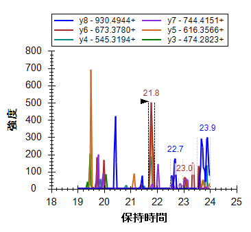 |
D_108_REP1 |
しかし、罹患被験体のクロマトグラム内には、健常被験体で観察されたのと同じようなピーク領域を作り出せるピークは見つかりません。これまでにピークドリフトや切断の操作で得てきた経験を用いれば、このピークは単にすべての罹患被験体の測定範囲外に横滑りしているわけではないと確信できますが、健常被験体に関しては違います。注入のランダム化により、上記の信頼度が増す可能性もあります。しかし現在の研究については、3つの繰り返し測定サイクルで十分なはずです。可能な限り積分を修正した後、このペプチドについてより多くの視認できるピークを持つ罹患群のランのうち2つが、健常被験体のランのすぐ後に続いていることにも気付くかもしれません（D_102_REP2およびD_102_REP3）。これは、キャリーオーバー効果を示唆している可能性があります。
結局のところ、これらのトランジションは本研究におけるバイオマーカーの最有力候補の1つを表している可能性があります。合成ペプチドを使うことで、CSSLLWAGAAWLRペプチドを正しく測定しているという信頼性を向上させることができます。また、ペプチド検索エンジンでこのペプチドが同定されるかどうか確かめるために、このピークのMS/MSスペクトルを取得（並列反応モニタリング（PRM）を使用）することもできます。最後に、上記の操作が失敗した場合、健常被験体で見られるピークがどのようなペプチドかを同定するため、MS/MSスペクトル上でde novoシーケンシングを行うことができます。ターゲットプロテオミクスでは、常に標的ペプチドの同定作業から開始しなければならないわけではありません。SDS-PAGEゲルバンドの方によく似ているため、差異を見つけて解析を始めることもできます。
この時点で、積分を修正したり解析に適さないペプチドを削除したりすると、残りのペプチドを処理していくことができるようになっているはずです。この操作は1時間以内でできるでしょう。ピーク形状が良好で、予定された保持時間ウィンドウ内で完全に溶出するペプチドは、ほとんど修正する必要がないということを確認できるはずです。これは多くの場合、[ ピーク領域 ] グラフおよび [ 保持時間 ] グラフを一目見れば分かります。ピーク形状が悪い、または多くのピークがスケジュールウィンドウ内で切断もしくは欠損したペプチドについては、そのペプチドを削除すればいいと思うかもしれません。しかし、この結論は急ぎ過ぎないようにしてください。興味深い考察を見逃してしまうかもしれません。
Skylineドキュメント内の積分についての問題を注意深く検証して修正した後は、実験条件間で見られるペプチド存在量にどのような差異があるかをより深く理解したいと思われるかもしれません。Skylineまたは外部統計ツールを使ってそのような解析を行うには、Skylineで通常「繰り返し測定」と呼ばれている、測定サンプルを更に分類する操作が必要となります。当該の分類に向け、Skylineは繰り返し測定注釈を用意しています。本チュートリアルでは、3つの繰り返し測定注釈（SubjectId、BioReplicate及びCondition）を使用します。
SubjectId注釈を定義するには、以下の手順を実施します。
フォームは以下のようになります。
[ ドキュメント設定 ] フォームは以下のようになります。
本チュートリアルは、Skyline外部ツール「MSstats」で利用可能な統計分析メソッドまでは詳しく取り上げませんが、このツールは今回のような解析に適しています。本データセットは、数多くのトレーニングコースやワークショップでMSstatsの使い方を実地説明するのに利用されています。この種の解析においてMSstatsで何ができるか関心がある場合、以下のようにSkylineにインストールすると2つの異なる注釈が得られます。
[ ツールストアからインストール ] フォームは次のようになります。
MSstatsのインストール中に追加した注釈を見る、またはMsstatsをインストールせずに注釈を直接追加するには、以下の手順を実行します。
これらの注釈の定義は以下のようになります。
[ ドキュメント設定 ] フォームは以下のようになります。
ドキュメントに追加した注釈を設定するには、以下の操作を行います。
[ ドキュメントグリッド ] は以下のようになります。
これで、42個の繰り返し測定すべての注釈をこのグリッドに手動入力できます。スプレッドシートからこのフォームに直接貼り付けることも可能です。これを行うには、以下の手順に従います。
注：このステップでは、セル編集モードの利用は避けてください。一番上のSubjectIdセル内のカーソルが点滅したらEscキーを押してください。
[ ドキュメントグリッド ] は以下のようになります。
スプレッドシートの値が [ ドキュメントグリッド ] 内のセルに以下のように入力されます。
削除されたピークまたは切断ピークのあるペプチドに、注釈を付けた方がよいでしょう。なぜなら、どちらの場合も統計分析中に問題となる可能性があるからです。このような目的で使用する注釈を定義するには、以下の手順を実行します。
[ 注釈を定義 ] フォームは以下のようになります。
[ ドキュメント設定 ] フォームは以下のようになります。

新しい「MissingData」注釈を切断ピークのあるすべてのペプチドに設定する準備をするには、以下の操作を行います。
[ レポートをカスタマイズ ] フォームは以下のようになります。
[ ドキュメントグリッド ] は以下のようになります。

残りのドキュメントの処理方法によっては、切断プリカーサーピークグループの数は223個ちょうどとなったり、ならない場合があります。ペプチドの「MissingData」チェックボックスは1個ずつオンにすることが可能です。任意ペプチドのボックスをオンにすると、残りは自動的にオンになります。なぜならこの注釈は、どのペプチドにも一度だけ適用されるからです。以下の操作を行って、これを試してみましょう。
[ ドキュメントグリッド ] は以下のようになります。
また以下の操作を行うことで、Excelおよび [ ドキュメントグリッド ] の値貼り付け機能を利用して1回の貼り付けで163行すべてを設定できます。
この手順は少し冗長であるとお気づきになったかもしれません。各ペプチドについて、MissingData注釈をTRUEに設定しなければならないのは1回だけです。しかし上記を行うと、切断ピークを持つ31個のペプチドのチェックボックスをそれぞれクリックするよりも、求めていた結果が迅速に得られます。
上記手順を実行すると、[ ターゲット ] リスト上位の多くのペプチドの名前の上／右側に、小さな赤い三角形マークが付いているのが分かります。

これらの三角形の上にマウスをポイントすると、テキスト「Missing Data True」とともにヒントが表示されます。
ここで以下の操作を行って、切断ピークを積分せずに完全に削除したすべてのペプチドについてこの処理を繰り返します。
[ レポートをカスタマイズ ] フォームは以下のようになります。
[ レポートをカスタマイズ ] フォームは以下のようになります。
[ ドキュメントグリッド ] は以下のようになります。
注：ドキュメントを完全に処理しなかった場合、ペプチドGSYNLQDLLAQには1行しか表示されない可能性があります。完全に処理されたドキュメントを開く手順については、次の注で説明します。
このレポートでは、任意のランに欠損ピークがあるペプチドの簡易リストが得られます。ペプチドが10個あることが容易に分かります。また、切断ピークを持たないペプチドは2個のみで、8個にはすでに「MissingData」注釈セットがあります。欠損ピークを持つ繰り返し測定名は、[ ペプチド ] 列と [ MissingData ] 列の右側にそれぞれ表示されます。すべてのペプチドに欠損データを標識付けるには、以下の操作を行います。
おめでとうございます。このデータセットでの初期データ処理が完了しました。データ品質に影響を与え得る問題をより明確に理解し、取得データに対して可能な限りピーク積分を最適化した時点で、データ品質をさらに評価するための更に高いレベルの統計を実行する準備が整ったことになります。おそらく、どのペプチドまたはタンパク質がバイオマーカーとして有用なのかについて理解し始めていると思います。
注：チュートリアルのこの時点でドキュメントをまだ完全に処理していない、あるいはご自身の処理とチュートリアル著者の処理を比較したい場合は、以下の手順で、本チュートリアルに含まれている完全に処理されたファイルを開いてください。
このような任意データセットの統計分析を、Skylineで現在提供されている機能を超えてより詳細に行うことはもちろんできますが、変動やグループ平均の初期検査を行う有用な方法がSkylineには用意されています。各被験体の技術的繰り返し測定の間の変動についての情報を得るには、以下の操作を行います。
これにより、[ ピーク領域 ] グラフは以下のようになります。
ここでさらに多くのペプチドを選択して、各被験体の技術的繰り返し測定間での変動係数（CV）を再確認できます。ほとんどが25%未満であることが分かります。しかし理想的には、本実験よりも低いCVが見られることが望ましいでしょう。3個の測定値から得られた低いCV が、10個の測定値から得られた同一CVよりふさわしいということは注目に値します。これは、小さい試料サイズでの標準偏差を過小評価する統計的傾向によるものです。
最後に、本実験における2グループ間のペプチド発現の差異について、Skyline を使用して基本的な情報を得ることができます。健常群／罹患群間の平均ペプチド存在量の差について予備的な確認を行うには、以下の手順を実行します。
タンパク質NP_872280のペプチドに対し、以下のような [ ピーク領域 ] のグラフが表示されます。
これらのグラフでは、バーがすべての繰り返し測定の平均値を表し（この場合はグローバル標準に対するピーク領域比）、エラーバーは平均値のいずれか側の標準偏差を表します。これにより、平均値が由来するサンプル分布についてある程度分かるようになります。
このグラフを解釈するには、試料群間の差を調べる上での目的を理解していることが重要です。最も一般的な目的は以下の2つです。
単に2グループ間での統計学的に優位な差を検出したいのであれば、分布の標準偏差よりも平均値の標準誤差の方に関心を持つことでしょう。t-検定から得たp値により、これら2つの平均の標準誤差値に関連した平均値の差について統計的有意性を示す数値が1 つ得られます。上記グラフでは、標準誤差値についての情報はまったく得られません。したがって、差分的発現に関する情報を得るにはあまり有用ではありません。
予測については、2つの集団の元となる分布が重要です。ある1つの標準偏差が2グループ間で大幅に重複している場合、このペプチドだけでは強力なバイオマーカー候補にはならないでしょう。この場合、どの分布によって単一測定値が得られたかを予測することは困難です。ここで、個別に予測されないペプチドの集団からでも強力な「バイオマーカーパネル」を作成できる可能性があることに注目します。
上記グラフ内のペプチドでは平均値に統計学的有意差がありますが、個々について予測するものではありません。これは、1つの標準偏差で分布範囲が重複しているグラフで確認できます。
ペプチド／タンパク質のリストを続行すると、すぐ上のタンパク質であるNP_036714はバイオマーカーとして使用できる非常に強力な候補であることが分かります。
本実験内の多くのペプチドは、2グループ間の各平均値における統計学的有意差を示しています。このターゲットリストの情報元が心臓疾患におけるタンパク質発現の変化に関する論文であったことを考えてみれば、これは驚くにあたりません。しかし、自力で強力なバイオマーカー候補と目されるものは、かなり少数です。
ペプチドCSSLLWAGAAWLRを含むタンパク質NP_001007697に到達すると、健常群と罹患群間では単一タンパク質に割り当てられているペプチドの相対発現レベルに大きな違いがあるケースが見られます。
このことから、多くの試料での同一ペプチド分子の測定についてはある程度の信頼性が得られる一方で、複数のペプチドプリカーサーの同一の元のタンパク質への割り当てについては信頼性はかなり低いことが多いという点が指摘されます。この特性が見られる理由は多数あります。例えば、ペプチドにはそれ自身が重要なバイオマーカー候補となるような翻訳後修飾（PTM）が存在することがあります。その一方で、残りのタンパク質は影響を受けない可能性があります。
Skylineでは、ペプチドまたはタンパク質ピーク領域の簡易な一対グループ比較を行うことができます。ペプチドまたはタンパク質のトランジションピーク領域を合計し、場合によっては正規化を適用し、ログを取り、技術的繰り返し測定をすべて平均化し、結果得られた値に対してt-検定を実施することでこの比較を行うことができます。Skylineは標識なしデータにおいて値が欠けている繰り返し測定または切断ピークを自動的に破棄します。
現在処理中のデータセットでこれを試すには、以下の手順を実行します。
[ グループ比較を編集 ] フォームは以下のようになります。
[ ドキュメント設定 ] フォームは以下のようになります。
先ほど定義したグループ比較を調べるには、以下の操作を行います。
Skylineに以下のようなグリッドビューが表示されます。
「倍率変化結果」列に信頼区間が表示されていない場合、倍率変化結果と調整されたP値の両ヘッダー間の縦線をダブルクリックします。
ログ変換された倍率変化値と信頼区間グラフを見るには、以下の操作を行います。
Skylineにより、以下のように [ Healthy v. Diseased：グリッド ] ビューの横にグラフパネルが追加されます。
これによりグリッド内とグラフのタンパク質が並べ替えられます。信頼区間を示すエラーバーの多くがゼロの線を横断していることに留意してください。99%の信頼度では、観測データが無作為に生じるのは珍しくないことを示しています。そしてこれには、複数の仮説を検証するための修正も一切行っていません。
不正発見率（FDR）を推定するBenjamini-Hochberg法で調整したp値を基にカットオフを設定するには、グリッドビューで以下の操作を行います。
グリッドツールバーに示す行数が48から11に減少し、当該グラフは以下のようになります。
ここで、有意の変化を示したタンパク質の多くには正の倍率変化平均値があり、これは羅患群ではこの値がさらに強いことを意味します。ただし、試料順序のランダム化の失敗による影響を考慮することが重要です。測定の全3サイクルにおいて罹患被験体は健常被験体に先行していたため、正規化において考慮しなかった劣化が倍率変化を引き起こして罹患群の上方調節のように見えてしまうと予測されます。
本実験のように、技術的繰り返し測定を収集する場合、測定を [ グループ比較を編集 ] フォーム内で正しく指定することが統計的推論では極めて重要です。これを行わない場合、各測定が異なる生物学的被験体に由来すると見なされて標準誤差や信頼区間が誤って絞られ、人為的にp値が低下してしまいます。
これを実際に見るには以下の操作を行います。
グリッドビューに37行（及び37本のバーが示されたグラフ）が表示され、調整されたp値は0.01未満になっています。これは、14種類の被験体で各3回の測定ではなく、42個の異なる被験体があると見なされて統計が計算されているからです。これは重要な違いであり、ご覧のように、ここで間違いを犯すと当惑するほど極度に楽観的な統計推論となってしまう場合があります。この場合、推定1% FDRで健常群／罹患群間で平均値に統計学的有意差のある11個のタンパク質が、一定濃度で注入される3つの標準ペプチドを含む「S」タンパク質を含む37個のタンパク質に増加しています。
本実験の本来の目標に戻り、ここで推定1% FDRでグループ平均値において統計学的有意差を持つペプチドのある1つのサブセットのみにドキュメントを減らすことができます。しかしこのデータセットは、ランダム化の欠如（罹患群が常に健常群の前に測定されている）及びラン間の体系的なシグナル劣化が原因で、罹患群での上方調整の程度を過大に表している可能性があるということに留意してください。
それでもなお、本ドキュメントのターゲットリストを推定1% FDRでグループ平均値に差のあるペプチドセットに減らすには、以下の手順を実行します。
[ Healthy v. Diseased：グリッド ] には、1% FDRカットオフを超えている92行が表示され、グラフはこのようになります。
これらのペプチドをドキュメントから削除するには、以下の操作を行います。
グリッドは以下のようになります。
VVLSGSDATLAYSAFKペプチドの倍率変化は1であり、信頼区間は1から1の99%であることに注意してください。これは、正規化のグローバル標準として使用されている単一ペプチドです。このペプチドはドキュメントから削除しない方がいいでしょう。それが非選択にした理由です。
Skylineに、選択した行の削除を確認する以下のメッセージが表示されます。
ここでグループ比較ウィンドウを閉じ、ドキュメント内の残りの34個のペプチドを再確認することが可能です。これらすべてには2グループ間での平均値に明白な差があるはずですが、その分布は1つの標準偏差だけでも常にばらばらになるわけではありません。つまり、条件別にグループ化されたピーク領域を表示している [ ピーク領域 ] グラフ内で、標準偏差を示すエラーバーが重複しているのが分かります。
本チュートリアルでは、すべてのインポート済みLC-MS/MSクロマトグラフィーデータについてSkylineが自動的に実行するピーク積分を視覚的に評価して修正する最も効果的な手法を学習しました。標識なしSRMデータセットのみを使用して作業を行いましたが、本チュートリアルで利用した手法はクロマトグラフィーを使った他の定量法で取得したデータでも同様に利用可能です。この検査と修正は手動で行うため、含まれているペプチドが2,000個を超えないデータセットに最も適しています。本ケースでは、137個のペプチドの処理に約1時間かかりました。すなわち、2,000個のペプチドを含むデータセットでは2日以上かかることになります。
より大規模なデータセットについては、とりあえず研究対象の条件の間に存在する差異を示すという初期の条件に基づいてペプチドを大まかにスクリーニングすると良いかもしれません。その場合は、対象となり得るペプチドにこの種の検査と修正を手動で行うことだけに時間を費やします。これで、Skylineのグループ比較サポートを使用して学習した方法でこの種のフィルタリングを達成できるはずです。調整されたp値（またはFDRカットオフ）の制限は、本チュートリアルで使用した1%ほど厳しくしなくてもいいかもしれませんが、アプローチは同様です。
ここまで、Skylineが提供するこの種の処理や専門的な使用法が、定量実験における潜在的なエラーの原因を理解して修正する際にどのように役立つかを見てきました。誤って割り当てられたピーク、干渉、ピーク切断、検出困難な量のペプチド、200倍ものペプチド信号の劣化、および二重溶出ペプチドについても直に扱ってきました。これらの問題を理解し、修正し、そして注釈するためにSkylineが提供するツールを使いこなすことで、定量的ターゲットプロテオミクス実験でのエラーを減らし、より効率的に生物学的な情報を得ることができるでしょう。
1. Bereman, M. S., MacLean, B., Tomazela, D. M., Liebler, D. C. & MacCoss, M. J. The development of selected reaction monitoring methods for targeted proteomics via empirical refinement. PROTEOMICS 12, 1134–1141 (2012).
2. Zhang, H. et al. Methods for Peptide and Protein Quantitation by Liquid Chromatography-Multiple Reaction Monitoring Mass Spectrometry. Mol. Cell. Proteomics MCP 10, (2011).